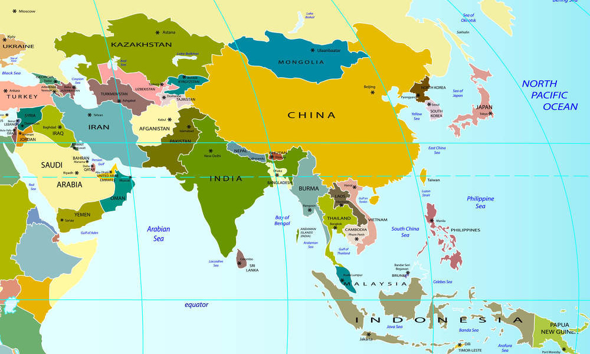

HOME > 기관활동 >한국위원회 사업
한국위원회 사업
SCHOOLS FOR ASIA
한국은 유니세프 역사상 유일하게 ‘도움 받던 나라에서 도움 주는 나라’로 탈바꿈한 나라입니다. 한국전쟁 직후 세상에서 가장 가난한 나라 가운데 하나였던 한국이 이처럼 발전한 데에는 교육의 힘이 큽니다. 교육은 어린이 한 명의 삶을 개선시킬 뿐 아니라 국가와 사회 전체를 변화시키는 엄청난 힘을 지니기 때문입니다.
유니세프가 어린이 교육에 주력하는 이유도 여기에 있습니다. 유니세프는 2004년부터 ‘Schools for Africa’ 캠페인을 통해 아프리카의 교육환경을 성공적으로 개선해왔으며 이를 바탕으로 2012년부터 ‘Schools for Asia-아시아에 희망의 학교를 선물하세요’ 캠페인을 시작해 아시아 어린이의 교육환경을 개선하고 있습니다. 유니세프한국위원회 중점사업이기도 한 ‘Schools for Asia’는 이제 아시아 어린이의 희망이 됐습니다.
주요 사업 영역
사업 대상국
인도 네팔 방글라데시 부탄 라오스 필리핀 동티모르 베트남 몽골 파푸아뉴기니 태국